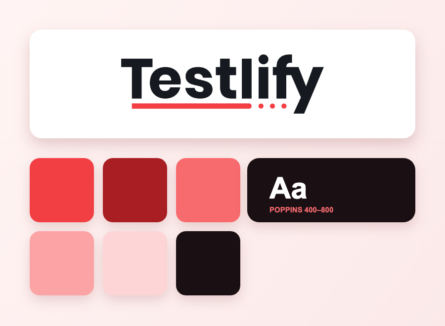
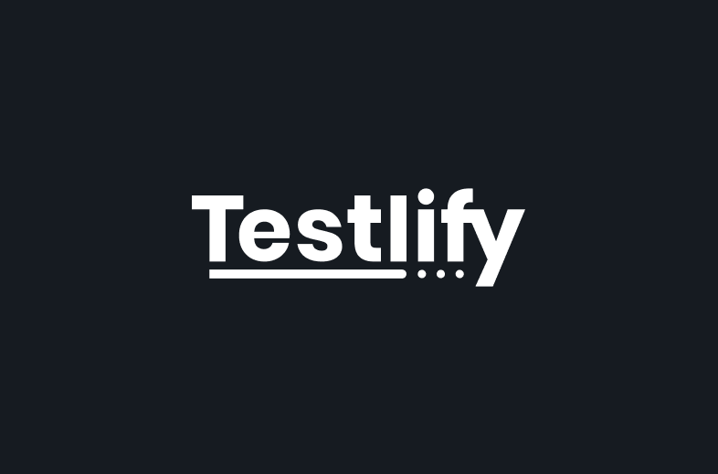

Our brand,
used well
Welcome to the official Testlify Brand Guidelines. This document is designed to ensure that our brand is used consistently across all platforms and materials. Please follow these guidelines when using Testlify's logo, typography, colors, and other brand assets.

Logo.
Approved logo versions
We offer two primary logo variations:
- Full-color logo: Use on white or light backgrounds for maximum visibility.
- Reversed/white logo: Use on dark or colored backgrounds when the full-color logo doesn't contrast well.
Ensure the logo is used exactly as provided and avoid creating your own versions.

Favicon.
Favicon usage
For small-scale uses like social media avatars or browser tabs, use the Testlify favicon or the simplified icon version of our logo. It should retain the logo's integrity at smaller sizes.
Wordmark.
Do's and don'ts: wordmark
✕ Don't
✓ Do

Logo usage.
How to use our logos
Do:
Use the provided logo files without modification (no stretching, distortion, or color changes).
Ensure the logo is clear and visible on backgrounds with sufficient contrast.
Use the logo consistently across all platforms and media.
Give the logo sufficient breathing room and place it in a prominent but balanced way.
Respect the clear-space and minimum size rules.
Use the reversed logo version on dark backgrounds for best visibility.
Don't:
Don't stretch, distort, or rotate the logo.
Don't change the logo's color or add effects like gradients or textures.
Don't place the logo over busy images or backgrounds without sufficient clear space.
Don't use the logo as part of your own branding, unless authorized.
Colour.
Our palette
- The primary color (#F23F44) should dominate brand visuals where you want a strong impact — logo, call-to-action buttons, key icons.
- Use dark primary (#A91E23) for hover, active states, or when the primary color needs more depth.
- Use darkest (#6E0B0E) sparingly for backgrounds or overlays that require bold contrast.
- Use medium (#F76A6E) for secondary highlights, banners, or subtle dividers that complement the primary color.
- Use light (#FBA3A5) and lighter (#FDD5D6) for softer backgrounds, cards, and accents when you want a subtle brand hint without overwhelming.
- Use lightest (#FFF0F0) as a base background to maintain warmth and visual consistency across designs.
- Reserve the bright primary for key touchpoints — avoid overusing it in large background areas unless balanced with neutral tones.
Partnerships.
Co-branding and partnerships
When partnering with other companies or brands:
- Keep the Testlify logo balanced with partner logos, maintaining equal size and appropriate clear space.
- Do not alter the logo in any way when used alongside other logos.
- Always submit co-branded materials for approval before public release.

Typography.
Poppins, everywhere
Use Poppins for all headlines, sub-headings and body text. Avoid using more than one or two additional fonts. Keep Poppins as the anchor for consistency. Don't use decorative fonts for body text; maintain readability and clarity.
Aa Bb Cc
The quick brown fox jumps over the lazy dog.

Contact
For support inquiries, reach us at support@testlify.com. For sales or partnership discussions, contact sales@testlify.com. You can also reach us by phone at +1 (844) 755-8378. For permission to use our logos or questions about these guidelines, contact support@testlify.com.
Press releases
When mentioning our company in press materials, please identify Testlify as an AI-powered skills assessment and interviewing platform. Our mission is to help companies hire the best talent quickly, fairly, and efficiently. Questions beyond these cases: press@testlify.com or +1 (844) 755-8378.